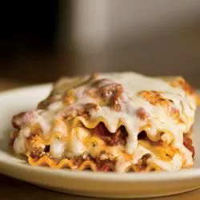

Simply Lasagna

Credits
allrecipes: Simply Lasagna
Description
This simple lasagna recipe is made with ground beef, spaghetti sauce, uncooked lasagna noodles, and three kinds of cheese. It's flavorful enough for a special dinner but easy enough to make and serve any night of the week.
Ingredients
- 1 pound ground Beef
- 24 ounce Spaghetti Sauce
- 1 cup Water
- 15 ounce Ricotta Cheese
- 1/2 cup grated Parmesan Cheese
- 1/4 cup chopped fresh Parsley
- 1 large Egg, beaten
- 12 Lasagna Noodles, uncooked
- Cooking spray
Steps
- Preheat the oven to 350 degrees F (175 degrees C).
- Cook and stir ground beef in a large skillet over medium-high heat until browned and crumbly, 5 to 7 minutes. Turn off the heat; drain and discard grease.
- Stir spaghetti sauce into the skillet. Pour water into the empty sauce jar; cover, shake well, then pour liquid into the skillet. Stir until beef and sauce are well combined.
- Mix ricotta cheese, 1 1/4 cups mozzarella, 1/4 cup Parmesan, parsley, and egg together in a bowl until well blended.
- Spread 1 cup meat sauce over the bottom of a 9x13-inch baking dish. Top with 3 lasagna noodles, 1/3 of the ricotta mixture, and 1 cup meat sauce. Repeat layers twice more with noodles, ricotta mixture, and meat sauce. Top with remaining noodles and meat sauce, then sprinkle remaining mozzarella and Parmesan over top.
- Spray a sheet of aluminum foil with cooking spray. Place the sheet, sprayed-side down, over the baking dish and seal tightly.
- Bake in the preheated oven for 45 minutes. Remove the foil and continue to bake until heated through, about 15 more minutes. Let stand for 15 minutes before serving.